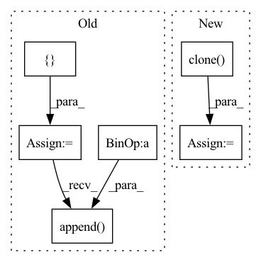

Pattern ID :41498
Before Change
time = torchaudio.transforms.TimeMasking(time_mask_param=time_mask_param)
if num > 1:
pieces = []
for i in range(1, num + 1):
start = piece_length * (i - 1)
end = piece_length * i
piece = spec[:, start:end]
if i == num:
piece = spec[:, start:]
freq(piece)
time(piece)
pieces.append( piece)
return torch.cat(pieces, dim=1)
else:After Change
def augment(in_spec, chunk_size=30, freq_mask_param=10, time_mask_param=6):
spec = torch.clone( in_spec)
freq_mask = torchaudio.transforms.FrequencyMasking(freq_mask_param=freq_mask_param, iid_masks=True)
time_mask = torchaudio.transforms.TimeMasking(time_mask_param=time_mask_param, iid_masks=True)
In pattern: SUPERPATTERN
Frequency: 3
Non-data size: 6
Instances Fragment ID: 116626994
Project Name: ivankunyankin/quartznet-asr
Commit Name: 28f999e7cfbefb66c9545f32e76a7454a7432aac
Time: 2021-07-01
Author: IKunyankin@gmail.com
File Name: utils.py
M Class Name: AnonimousClass
N Class Name: AnonimousClass
M Method Name: augment(4)
N Method Name: augment(4)
M Parent Class:
N Parent Class:
M File Name: utils.py
N File Name: utils.py
M Start Line: 57
M End Line: 82
N Start Line: 57
N End Line: 74
Before Change
jacobian_g = group.new_empty(group.shape[0], 3, 6)
jacobian_g[:, :, :3] = group[:, :, :3]
jacobian_g[:, :, 3:] = -group[:, :, :3] @ SO3._hat_autograd_fn(tensor)
jacobian_p = group[:, :, :3].view(tensor.shape[:-1] + (3, 3))
jacobians = []
jacobians.append(jacobian_g)
jacobians.append( jacobian_p)
return jacobians, _transform_from_impl(group, tensor)
class TransformFrom(lie_group.BinaryOperator):After Change
jacobian_g[..., 3:] = -group[..., :3] @ SO3._hat_autograd_fn(tensor)
jacobian_p = group[..., :3]
jacobian_g = jacobian_g.expand(*size, 3, 6).clone()
jacobian_p = jacobian_p.expand(*size, 3, 3).clone()
return [jacobian_g, jacobian_p], ret
class TransformFrom(lie_group.BinaryOperator): Fragment ID: 116626999
Project Name: facebookresearch/theseus
Commit Name: f8f533dbde1f2fc8e8591949bb127c0488467a20
Time: 2023-05-10
Author: 6612911+fantaosha@users.noreply.github.com
File Name: theseus/labs/lie/functional/se3_impl.py
M Class Name: AnonimousClass
N Class Name: AnonimousClass
M Method Name: _jtransform_from_impl(2)
N Method Name: _jtransform_from_impl(2)
M Parent Class:
N Parent Class:
M File Name: theseus/labs/lie/functional/se3_impl.py
N File Name: theseus/labs/lie/functional/se3_impl.py
M Start Line: 755
M End Line: 762
N Start Line: 754
N End Line: 762
Before Change
check_group_tensor(group)
check_transform_tensor(tensor)
jacobian_g = -group @ _hat_autograd_fn(tensor)
jacobian_p = group.view(tensor.shape[:-1] + (3, 3))
jacobians = []
jacobians.append(jacobian_g)
jacobians.append( jacobian_p)
return jacobians, _transform_from_impl(group, tensor)
class TransformFrom(lie_group.BinaryOperator):After Change
size = get_transform_tensor_size(ret)
jacobian_g = -group @ _hat_autograd_fn(tensor)
jacobian_p = group
jacobian_g = jacobian_g.expand(*size, 3, 3).clone()
jacobian_p = jacobian_p.expand(*size, 3, 3).clone()
return [jacobian_g, jacobian_p], ret
Fragment ID: 116626997
Project Name: facebookresearch/theseus
Commit Name: f8f533dbde1f2fc8e8591949bb127c0488467a20
Time: 2023-05-10
Author: 6612911+fantaosha@users.noreply.github.com
File Name: theseus/labs/lie/functional/so3_impl.py
M Class Name: AnonimousClass
N Class Name: AnonimousClass
M Method Name: _jtransform_from_impl(2)
N Method Name: _jtransform_from_impl(2)
M Parent Class:
N Parent Class:
M File Name: theseus/labs/lie/functional/so3_impl.py
N File Name: theseus/labs/lie/functional/so3_impl.py
M Start Line: 666
M End Line: 671
N Start Line: 668
N End Line: 674